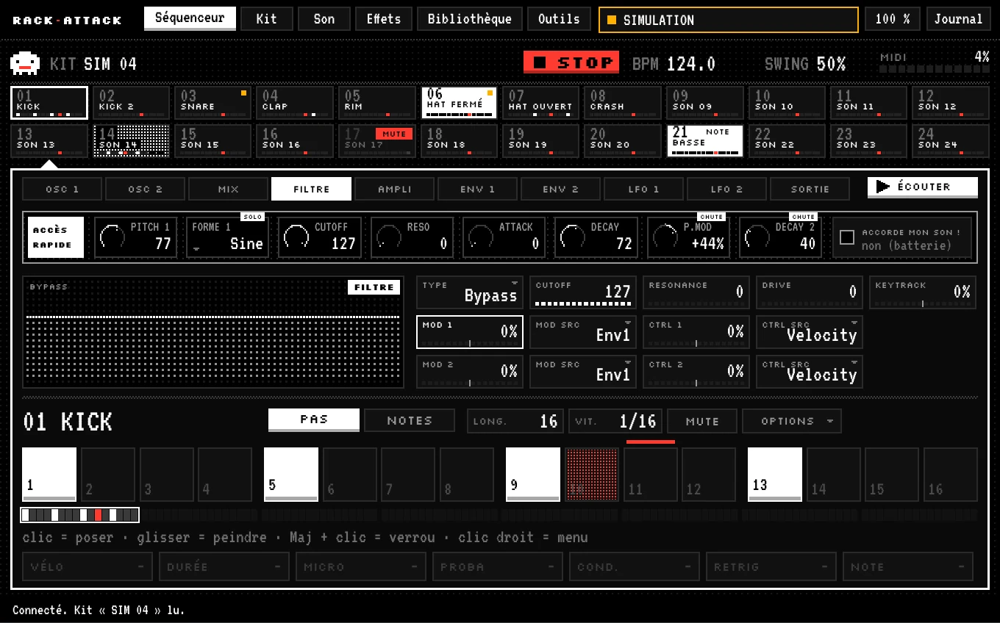
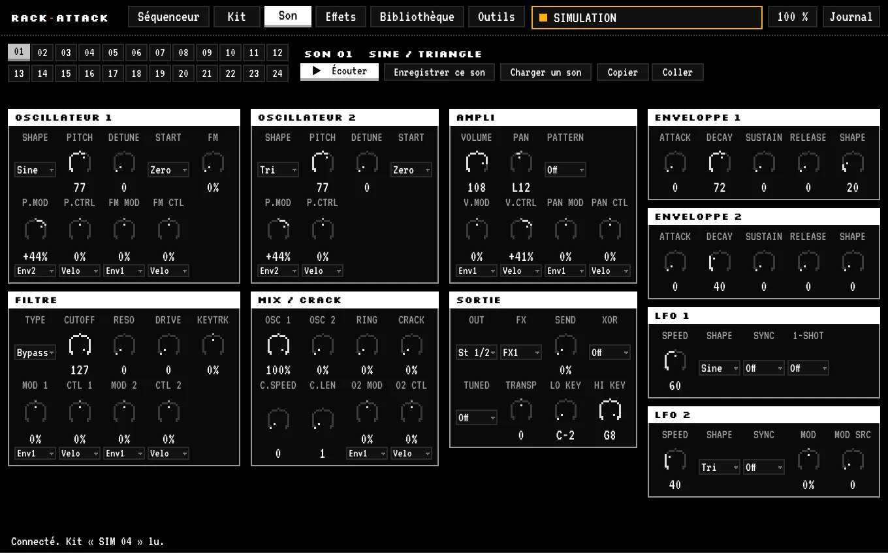

L'éditeur du Waldorf RackAttack.
Séquenceur, sons, kits, effets. Et un simulateur quand la machine dort.
- v@VERSION@
- macOS 11+
- Apple Silicon & Intel
- AU · VST3 · appli
- gratuit

01 · Installer
- 1Ouvre le DMG. Quitte ton DAW.
- 2Double-clic sur Installer RackAttack Editor. « Personnaliser » = juste l'AU, le VST3 ou l'appli.
- 3macOS refuse ? (Il n'aime pas ce qui n'est pas signé chez Apple.) Ouvre le Terminal : ⌘+Espace, tape Terminal, ⏎. Colle :
Puis ton mot de passe : rien ne s'affiche quand tu le tapes, c'est normal.
@INSTALLER_CMD@
- 1Ouvre le DMG. Quitte ton DAW.
- 2Glisse chaque élément sur son dossier : .component → Components, .vst3 → VST3, .app → Applications.
- 3Ouvre le Terminal : ⌘+Espace, tape Terminal, ⏎. Colle :
Mot de passe (invisible, c'est normal). Elle débloque l'AU et le VST3, puis fait valider l'AU.
@TERMINAL_CMD@
Quand le Terminal dit RackAttack Editor est prêt., rouvre ton DAW. Live ne le voit pas ? Réglages › Plug-ins › Réanalyser.
02 · Brancher
- 2câbles MIDI : le OUT du RackAttack vers l'entrée de ton interface, son IN vers la sortie.
- 2réglages sur la machine (Global/Utility) : Ctl. send sur SysEx, receive sur On · Rx PrgChg sur On.
- 1assistant au premier lancement : il trouve la machine et lit son kit.
03 · Jouer
Essaie ici, c'est le même geste que dans l'appli. (Avec le son !)
clic = poser · glisser = peindre · Maj + clic = verrou ■ · le nom = choisir la piste
- ACCÈS RAPIDELes bons réglages du son choisi, juste au-dessus des pas.
- VERROUSUn réglage différent sur un seul pas. Il revient tout seul après.
- ACCORDE MON SON !Coche, passe en NOTES, et la piste joue des mélodies.
04 · Trifouiller

2 oscillateurs, 1 filtre, 2 enveloppes, 2 LFO. Tout à l'écran, en même temps.
05 · Sans machine
RackAttack pas branché ? L'appli passe en SIMULATION et joue les sons elle-même. Pour composer dans le train, ou essayer avant d'acheter.
▶ La même chose dans ton navigateur
06 · Mesurer
Tu as la machine ? Aide le simulateur à lui ressembler.
- 1câble audio de la machine vers ton interface.
- 5minutes : Outils › Mesurer. Le fantôme fait le reste. Toi, tu ne touches à rien.
- 1fichier .ramesure dans Documents › RackAttack › Mesures. Envoie-le-nous, en privé : le simulateur s'améliore pour tout le monde.
07 · Mises à jour
Une nouvelle version ? Un bouton jaune apparaît en haut. Un clic, c'est fait.
Tu as la 0.5.1 ou la 0.5.2 ? Installe une version plus récente une fois à la main, le bouton revient après.